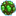
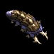
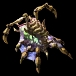
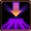
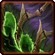
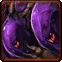
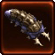

- Stats
- Production
- Abilities/Upgrades
- Strategy
- Lore
- Related
Armor: 1
 0/0 0 per second
0/0 0 per secondDamage: 0
Attacks: 0
Cooldown: 0
Targets: None
Attack Range: 0
Speed on Creep: 0
Acceleration: 0
Collision Radius: 2
Requirements: Nothing
| Level | Level 1 | Level 2 | Level 3 |
| Minerals |  0 0 | 0 | 0 |
| Vespene Gas |  0 | 0 | 0 |
| Time |  0 0 | 0 | 0 |
| Damage Bonus | 0 | 0 | 0 |
| Total Damage | 0 | 0 | 0 |
300Vespene Cost: 0
Supply:
 0
0Produced From: Drone Build Time:
100Requirements: Drone
Broodlings Spawn on Death: 9
Supply Provided:
2Unit Type: Armored, Biological, Structure, Ground
Requirements: Nothing
| Level | Level 1 | Level 2 | Level 3 |
| Minerals | 0 | 0 | 0 |
| Vespene Gas | 0 | 0 | 0 |
| Time | 0 | 0 | 0 |
| Armor Bonus | 0 | 0 | 0 |
| Total Armor | 1 | 1 | 1 |
| Unit | Icon | Minerals | Vespene Gas | Time | Supply | Requirements |
| Larva |  | 0 | 0 | 15 | 0 | Hatchery/Lair/Hive |
| Queen |  | 150 | 0 | 50 | 2 | Spawning Pool |
Queen: Defensive unit. Can use Spawn Larva, Spawn Creep Tumor, and Transfusion. Moves much faster on creep. Can attack ground and air units.
| Research | Icon | Minerals | Vespene Gas | Time | Requirements |
| Burrow |  | 100 | 100 | 100 | Lair |
| Pneumatized Carapce |  | 100 | 100 | 60 | Lair |
| Ventral Sacs |  | 200 | 200 | 130 | Lair |
Pneumatized Carapce: Increases the movement speed of Overlords to 1.88, and Overseers movement speed to 2.75. Requires a Lair.
Ventral Sacs: Allows Overlords to transport units. Requires a Lair.
| Icon | Minerals | Vespene Gas | Research Time | Researched At |
|  | 0 | 0 | 0 | Already Researched |
Information: This ability is not from the Hatchery, but it affects it. The Queen spends 25 energy to spawn four eggs on a Hatchery/Lair/Hive. They gestate for 40 seconds, and then hatch into larva.
If you have any suggestions for more strategies, go ahead and post on the forums 'here'!
+1 Weapons vs Zerglings
When Zealots have a +1 weapon advantage versus Zerglings, they will kill Zerglings in two attacks instead of three. This makes Zealots very effecient against Zerglings until the zerg catches up in armor upgrades.
Because of this, there are a handful of timing attack that take advantage of the effecient +1 weapon zealots, forcing the zerg to make spines, roaches, or some other unit than zerglings unless the zerg wants to trade inefficiently.
+1 Weapons vs Zerglings
Sum text about how gosu this is
+1 Weapons vs Zerglings
Sum text about how gosu this is
- Overview
The hatchery is the foundational structure for every zerg colony.
Hatcheries perform three vital functions that no colony can survive without: producing the creep, which most zerg structures require in order to be built, giving birth to larvae that can mutate into the various zerg breeds and digesting minerals and vespene gas to change into a nutrient form that zerg can use to feed their mutations.
In addition, the hatchery is one of the only structures that can be built without pre-existing creep (the other being the extractor) and is therefore essential for any expansion attempt.
Source Information
Text information from the Starcraft Wiki.
Photo 1 created by Saejin Oh. Copyright: UDON Entertainment.
Photo 2 created by Samwise Didier. Copyright: Blizzard Entertainment.
| Zerg |
| Units |
| Hatchery Tech | Drone | Overlord | Queen | Zergling | Baneling | Roach |
| Lair Tech | Overseer | Hydralisk | Mutalisk | Corruptor | Infestor |
| Hive Tech | Ultralisk | Broodlord |
| Spawned Units | Larva | Changeling | Infested Terran | Broodling |
| Structures |
| Hatchery Buildings | Extractor | Spawning Pool | Baneling Nest | Roach Warren | Evolution Chamber |
| Lair Buildings | Hydralisk Den | Spire | Infestation Pit | Nydus Network |
| Hive Buildings | Ultralisk Cavern | Greater Spire |
| Defensive Buildings | Spine Crawler | Spore Crawler | Creep Tumor | Nydus Worm |